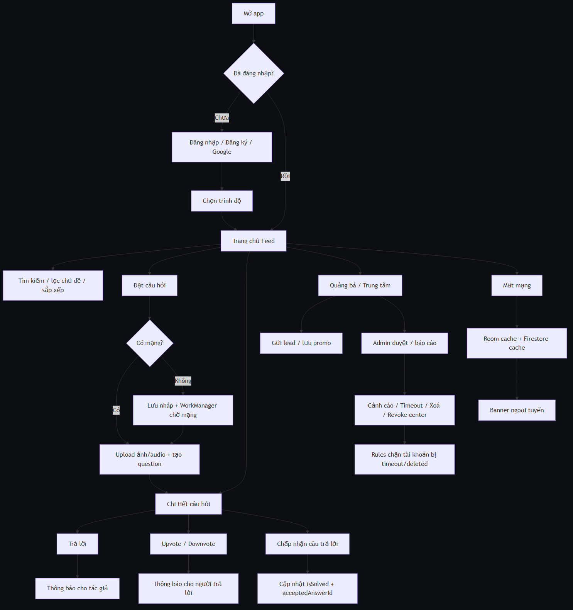
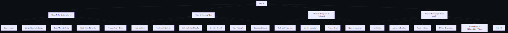
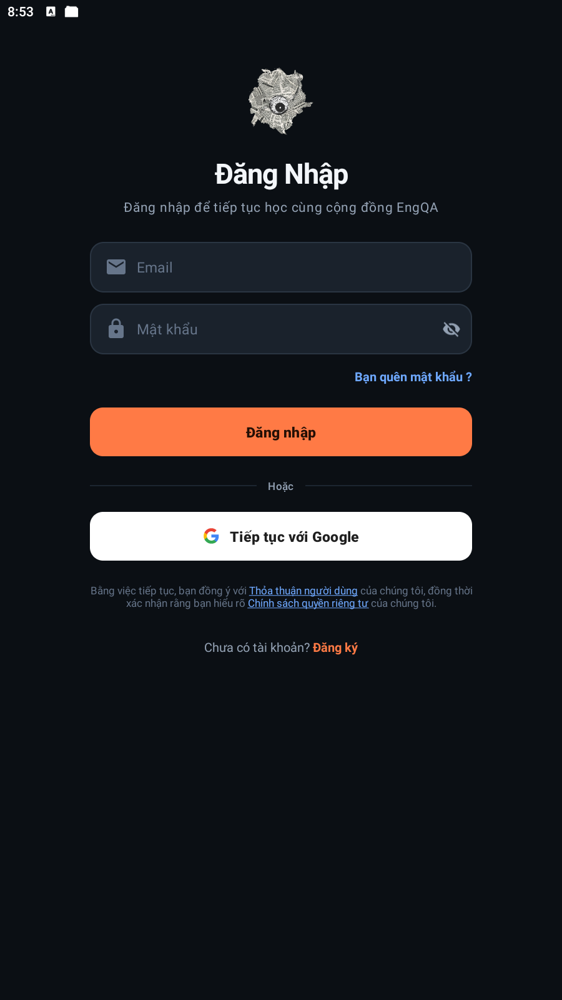
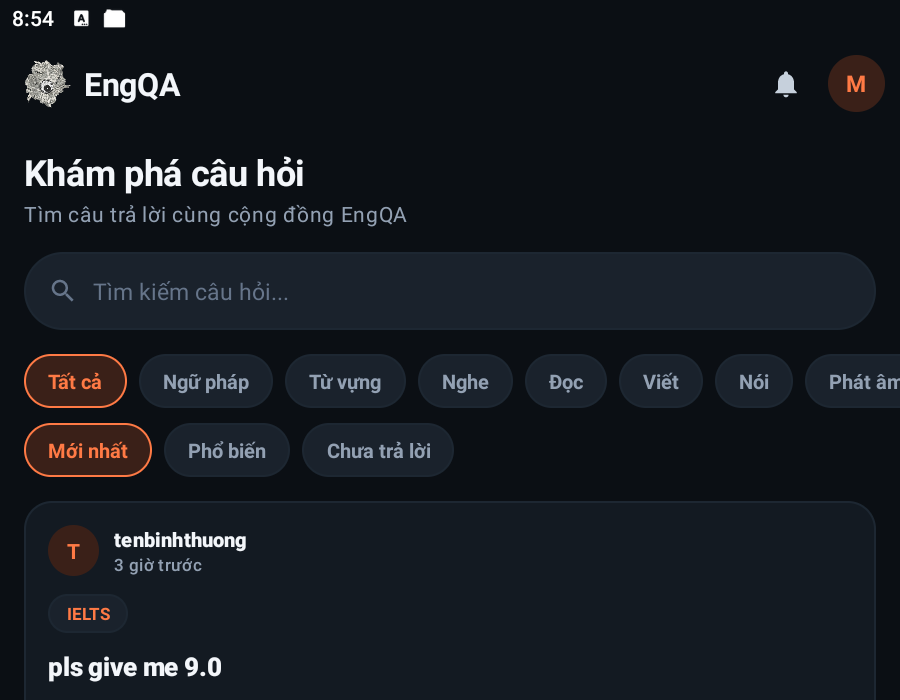
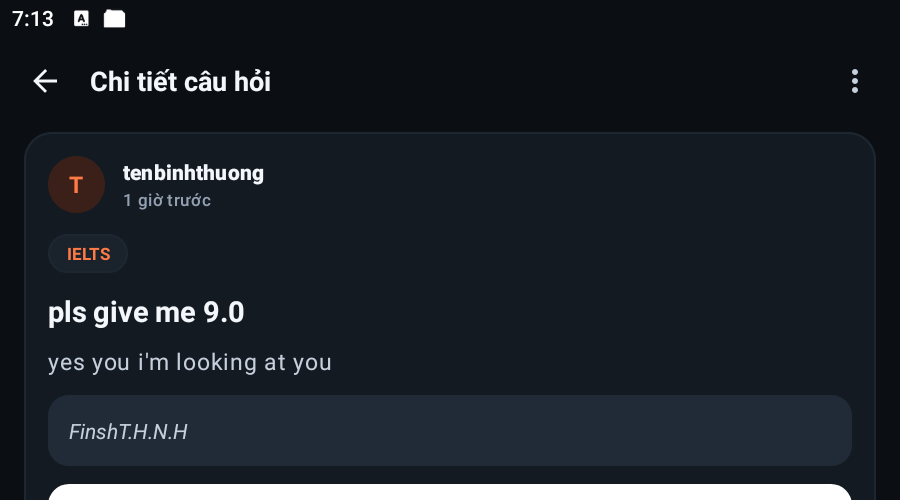
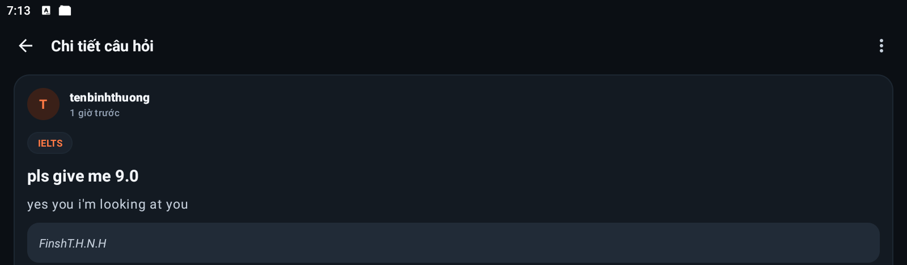
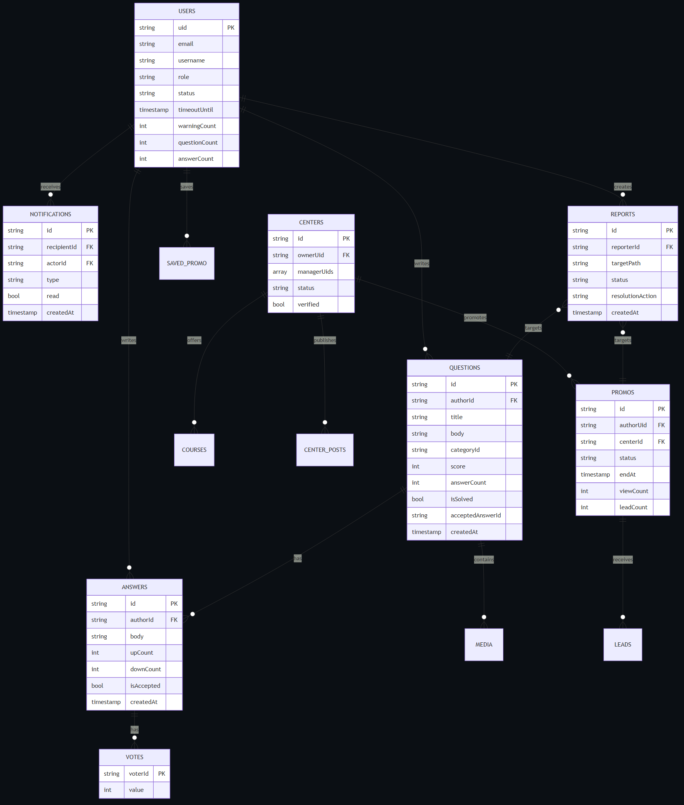
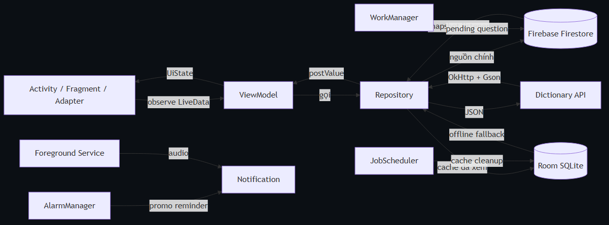
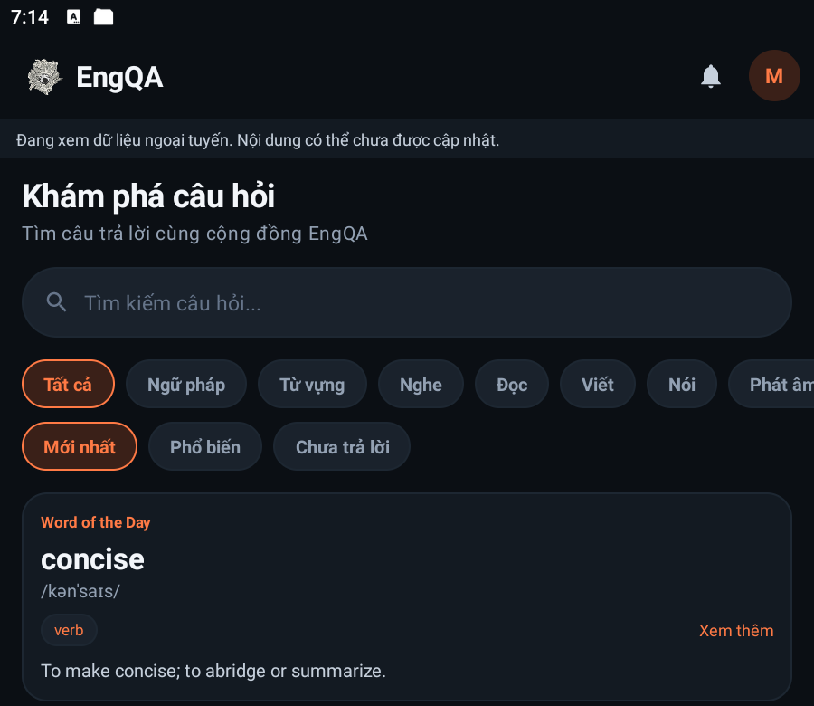

TRƯỜNG ĐẠI HỌC KINH TẾ THÀNH PHỐ HỒ CHÍ MINH
KHOA CÔNG NGHỆ THÔNG TIN
NỀN TẢNG HỎI ĐÁP TIẾNG ANH VÀ QUẢNG BÁ TRUNG TÂM
| Môn học | Phát triển ứng dụng di động |
| Giảng viên hướng dẫn | ............................................................ |
| Nhóm thực hiện | Nhóm EngQA |
| Thành viên | Thịnh · Bảo · Phú · Đăng |
| Thời gian | Tháng 10/2026 |
Báo cáo đồ án · Phiên bản 1.0 · Mã nguồn: MOB-EngQA
Danh mục hình
Danh mục bảng
| Từ viết tắt | Diễn giải |
|---|---|
| API | Application Programming Interface |
| CRUD | Create – Read – Update – Delete |
| DAO | Data Access Object |
| ERD | Entity Relationship Diagram |
| FCM | Firebase Cloud Messaging |
| MVVM | Model – View – ViewModel |
| SDK | Software Development Kit |
| UI/UX | User Interface / User Experience |
| JSON | JavaScript Object Notation |
| Room | Thư viện ORM/SQLite của Android Jetpack |
EngQA là ứng dụng di động hỗ trợ cộng đồng học tiếng Anh theo mô hình hỏi đáp (Q&A) kết hợp quảng bá trung tâm. Người học có thể đặt câu hỏi kèm ảnh, đoạn văn hoặc âm thanh; cộng đồng trả lời, bình chọn và chấp nhận câu trả lời đúng. Các trung tâm tiếng Anh có thể tạo hồ sơ, đăng khóa học, đăng bài và gửi chương trình quảng bá; người học có thể lưu bài quảng bá hoặc để lại thông tin tư vấn.
Ứng dụng được xây dựng bằng Java, XML và Android SDK, sử dụng Firebase Authentication và Cloud Firestore làm nền tảng dữ liệu thời gian thực. Giao diện theo Material 3, tối ưu cho màn hình điện thoại, có bố cục thay thế khi xoay ngang và có bộ nhớ đệm ngoại tuyến.
Việc học tiếng Anh thường gặp ba khó khăn: (1) người học cần phản hồi nhanh cho câu hỏi ngữ pháp, từ vựng, phát âm; (2) nội dung học phân tán trên nhiều nhóm mạng xã hội, khó tìm lại; (3) thông tin trung tâm quảng bá thiếu kiểm chứng và dễ bị spam. EngQA gom ba nhu cầu này vào một ứng dụng:
Với đồ án môn học, mục tiêu không phải xây dựng sản phẩm thương mại hoàn chỉnh mà là chứng minh năng lực vận dụng kiến trúc Android, Firebase, responsive, offline, background work và kiểm thử.
Java là ngôn ngữ chính của dự án. Các lớp được tổ chức theo hướng đối tượng: Activity cho vòng đời màn hình, ViewModel cho trạng thái, Repository cho truy cập dữ liệu, POJO trong model/ cho Firestore. Java 11 được cấu hình trong Gradle; mã chạy trên Android runtime thông qua D8/ART.
Ứng dụng dùng minSdk 29, targetSdk 37 (theo cấu hình hiện tại). Các thành phần chính:
Android Studio cung cấp Layout Editor, Logcat, Device Manager và Gradle. Trong quá trình làm, nhóm dùng Android Studio emulator và thiết bị Samsung SM-S908E (API 30) để kiểm tra xoay màn hình, offline, notification và background work. Các lệnh kiểm thử chính:
.\gradlew.bat assembleDebug
.\gradlew.bat testDebugUnitTest
.\gradlew.bat connectedDebugAndroidTest
.\gradlew.bat lintDebug
Luồng upload media hiện tại được giữ nguyên theo yêu cầu: chọn ảnh/âm thanh → nén/kiểm tra → lưu theo cơ chế hiện có của dự án. Báo cáo này không thay đổi cách upload; các phần mới chỉ liên quan đến phát audio nền, cache đọc, rules và kiểm thử.
Nhóm kiểm thử theo bốn lớp:
@firebase/rules-unit-testing): quyền đọc/ghi, timeout, notification, report.Kết quả chi tiết ở Chương 7.

Hình 2.1. Sơ đồ luồng công việc của EngQA
Luồng chính gồm: mở app → xác thực → feed → đặt câu hỏi/trả lời/vote/accept → quảng bá và kiểm duyệt. Nhánh offline cho phép lưu nháp và đăng lại khi có mạng; nhánh cache cho phép xem lại nội dung đã tải.

Hình 2.2. Sơ đồ phân rã chức năng
Hệ thống được chia thành bốn nhóm chức năng:
| Tác nhân | Use case chính |
|---|---|
| Khách chưa đăng nhập | Đăng ký, đăng nhập, xem promo/trung tâm đã duyệt (nếu cho phép) |
| Người học | Feed, tìm kiếm, đặt câu hỏi, trả lời, vote, accept, lưu promo, gửi lead, báo cáo, quản lý hồ sơ |
| Quản lý trung tâm | Tạo hồ sơ trung tâm, chờ duyệt, sửa hồ sơ, đăng khóa học/bài viết, tạo promo |
| Admin | Duyệt/từ chối trung tâm và promo, xử lý báo cáo, cảnh cáo/timeout/xoá nội dung, thu hồi trung tâm |
| Hệ thống | Rules, notification, cache cleanup, alarm, offline queue |
values-land, values-sw600dp.Ứng dụng dùng theme tối với ba lớp màu: nền #0B0F14, card #131A22, input #1A222C; màu nhấn cam #FF6B35 dùng cho hành động chính và trạng thái đang chọn. Chữ chính màu trắng ngà, chữ phụ xám xanh. Các nguyên tắc:
contentDescription.StateView với nút “Thử lại”.
Hình 3.1. Màn hình đăng nhập
Màn đăng nhập gồm email, mật khẩu, quên mật khẩu, đăng nhập, Google và liên kết đăng ký. Mật khẩu có nút hiện/ẩn; lỗi hiển thị ngay dưới trường. Tài khoản Google được phát hiện qua providerData; ứng dụng không hiển thị đổi mật khẩu mà hướng người dùng sang trang quản lý của Google.
Luồng đăng ký kiểm tra email, độ mạnh mật khẩu, tên hiển thị duy nhất; sau khi tạo Auth, ứng dụng ghi users/{uid} và reservation username trong transaction. Nếu ghi profile lỗi, tài khoản Auth được giữ để có thể đăng nhập lại và bổ sung sau.

Hình 3.2. Trang chủ feed
Trang chủ gồm:
Tìm kiếm dùng searchKeywords (đã bỏ dấu, tách từ) và arrayContainsAny; kết quả được xếp hạng ở client bằng SearchRanker. Khi mất mạng, repository trả cache Room và UI hiện banner.

Hình 3.3. Chi tiết câu hỏi
Màn chi tiết hiển thị câu hỏi, đoạn văn, ảnh, audio, danh sách câu trả lời và ô nhập câu trả lời. Ảnh giữ đúng tỉ lệ, bấm để mở ImageViewerActivity (pinch-to-zoom). Audio có nút play/pause, thanh tiến trình và nút “Nền” để phát qua foreground service.
Câu trả lời được sắp xếp theo accepted trước, sau đó theo điểm và thời gian. Vote dùng transaction: một document votes/{uid} cho mỗi người, cập nhật upCount, downCount và score tuyệt đối để tránh trôi counter. Accept cập nhật isAccepted của câu trả lời, isSolved và acceptedAnswerId của câu hỏi trong cùng transaction.
PreferenceFragmentCompat.Admin hiện có màn danh sách báo cáo/trung tâm/promo, duyệt hoặc từ chối, cảnh cáo, timeout, xoá nội dung và thu hồi trung tâm. Các thao tác nguy hiểm đều có hộp thoại xác nhận; kết quả được ghi audit log và gửi notification cho người bị xử lý. Định hướng tiếp theo là chuyển hành động sang bottom sheet và thêm badge/pagination để thao tác một tay tốt hơn.
Manifest không còn android:screenOrientation; hệ thống tự quyết định hướng. Các bố cục thay thế:
layout-land/activity_home.xml: feed + rail danh mục.layout-land/activity_question_detail.xml, activity_menu_screen.xml: bản ngang.values-land/dimens.xml: giảm/điều chỉnh padding form.values-sw600dp/dimens.xml, values-sw900dp: giới hạn chiều rộng form trên tablet.
Hình 3.4. Chi tiết câu hỏi ở chế độ ngang
Khi xoay, Activity được tạo lại nhưng dữ liệu nằm trong ViewModel và listener được gỡ/đăng ký đúng vòng đời, nên không mất trạng thái và không nhân đôi listener.
contentDescription; text có contrast trên nền tối.ScrollView/NestedScrollView, windowSoftInputMode="adjustResize".EngQA dùng Firestore (NoSQL) thay vì SQL Server/MySQL. Mỗi collection là một tập document; quan hệ được thể hiện bằng id tham chiếu và subcollection.
| Collection | Khóa | Trường chính | Ghi chú |
|---|---|---|---|
users |
uid |
email, username, level, role, status, timeoutUntil, warningCount, questionCount, answerCount, avatarUrl | status: ACTIVE/TIMEOUT/DELETED |
questions |
auto id | authorId, title, body, categoryId, tags, level, type, passageText, imageUrls, audioUrl, searchKeywords, score, answerCount, isSolved, acceptedAnswerId, createdAt, updatedAt | feed, tìm kiếm |
questions/{id}/answers |
auto id | authorId, body, upCount, downCount, isAccepted, createdAt | subcollection |
questions/{id}/answers/{id}/votes |
uid |
value (±1) | một vote/người/câu trả lời |
questions/{id}/media |
auto id | mime, data (Base64), createdAt | giữ nguyên cơ chế upload hiện tại |
notifications |
auto id | recipientId, actorId, type, questionId, answerId, promoId, centerId, title, body, read, createdAt | in-app |
centers |
auto id | ownerUid, managerUids, name, description, status, verified | duyệt bởi admin |
centers/{id}/courses |
auto id | title, description, level, fee | quản lý trung tâm |
centers/{id}/posts |
auto id | title, body, createdAt | quản lý trung tâm |
centerRequests |
uid |
status, centerId | marker một yêu cầu/người |
promos |
auto id | authorUid, centerId, title, body, type, level, fee, schedule, contactPhone, linkUrl, imageUrl, endAt, status, viewCount, clickCount, leadCount | duyệt bởi admin |
promos/{id}/leads |
uid |
userUid, name, phone, note, status | một lead/người/promo |
reports |
uid_hash(targetPath) |
reporterId, targetPath, reason, status, resolutionAction, resolutionNote, resolvedBy, resolvedAt | chống trùng |
admins |
uid |
role | chỉ tạo thủ công/Console |
auditLogs |
auto id | adminId, action, target, note, createdAt | nhật ký admin |

Hình 4.1. Mô hình thực thể Firestore
questions.authorId → users.uid.answers.authorId → users.uid; answers nằm dưới questions/{id}.votes/{uid} nằm dưới answer; document id chính là người vote nên không thể vote hai lần.notifications.recipientId → người nhận; actorId → người gây ra; questionId/answerId/promoId/centerId là deep link.promos.centerId → centers.id; leads/{uid} nằm dưới promo.reports.targetPath là chuỗi questions/{id} hoặc promos/{id}.Quy ước thời gian: createdAt, updatedAt, resolvedAt dùng FieldValue.serverTimestamp(); rule so sánh timeout với request.time, không tin đồng hồ thiết bị.
| Mục đích | Truy vấn |
|---|---|
| Feed mới nhất | questions + where categoryId + orderBy createdAt desc + limit 10 |
| Feed phổ biến | questions + where categoryId + orderBy score desc, createdAt desc + limit 10 |
| Chưa trả lời | questions + where answerCount == 0 + orderBy createdAt desc |
| Tìm kiếm | questions + where searchKeywords arrayContainsAny tokens + orderBy score/createdAt |
| Câu trả lời | questions/{id}/answers + orderBy isAccepted desc, createdAt asc |
| Vote của tôi | questions/{id}/answers/{aid}/votes/{uid} |
| Thông báo | notifications + where recipientId == uid + orderBy createdAt desc + limit 100 |
| Promo đã duyệt | promos + where status == APPROVED + orderBy createdAt desc |
| Báo cáo admin | reports + where status == pending + orderBy createdAt asc |
Các composite index tương ứng nằm trong firestore.indexes.json, gồm index cho questions (category + createdAt, category + score, category + answerCount, searchKeywords + category + score/answerCount), answers, notifications, centers, promos.
Rules là lớp bảo vệ chính. Các nguyên tắc đã triển khai:
isActive() đọc users/{uid}; chặn DELETED; TIMEOUT chỉ được phép sau timeoutUntil so với request.time; admin bỏ qua.authorId, score, answerCount, isSolved, acceptedAnswerId không được sửa tùy tiện. Accept có nhánh riêng cho chủ câu hỏi.questionCount/answerCount chỉ được tăng/giảm đúng 1; upCount/downCount thay đổi trong biên ±1; acceptedCount không cho client ghi.answer phải do người trả lời tạo, recipient là chủ câu hỏi, answerId tồn tại; type vote phải có vote thật; type accepted phải khớp acceptedAnswerId; type kiểm duyệt chỉ admin.uid_hash(targetPath), một báo cáo pending/người/nội dung; chỉ admin được resolve.centerRequests/{uid}; manager không tự đổi status/verified; subcollection chỉ đọc khi trung tâm đã duyệt hoặc là manager/admin.Các rule được kiểm chứng bằng 12 test trên Firestore Emulator (xem Chương 7).
Ngoài Firestore persistence, ứng dụng có Room database AppDatabase version 3:
saved_promo: promo đã lưu (có từ trước).cached_question: JSON câu hỏi + ownerUid + categoryId + createdAt/score/answerCount; khóa chính (owner_uid, question_id).cached_notification: JSON thông báo + ownerUid + createdAt/read.Cache được ghi khi listener Firestore trả dữ liệu; khi listener lỗi (mất mạng hoàn toàn), repository đọc cache và trả Page(fromCache=true). Trang chủ hiện banner “Đang xem dữ liệu ngoại tuyến”. Cache giới hạn 7 ngày và được dọn bởi JobScheduler.
| Package | Thành phần chính | Trách nhiệm |
|---|---|---|
com.example.engqa |
Login, Register, Home, Main (đặt câu hỏi), QuestionDetail, Menu, Promo, Center, Admin, Settings | Activity, điều hướng |
model |
User, Question, Answer, Vote, Promo, Center, Report, AppNotification, UiState | POJO Firestore + trạng thái UI |
data |
UserRepository, QuestionRepository, AnswerRepository, VoteRepository, NotificationRepository, ReportRepository, CenterRepository, WordRepository, OfflineCache | Nơi duy nhất dùng Firebase/OkHttp/Room |
data/local |
AppDatabase, SavedPromo, CachedQuestion, CachedNotification, DAO | Room |
viewmodel |
AuthViewModel, FeedViewModel, QuestionDetailViewModel, AdminViewModel, NotificationViewModel, PromoViewModel | Trạng thái + gọi Repository |
ui |
FeedAdapter, AnswerAdapter, SearchRanker, StateView, AudioPlayerView | Adapter/View |
media |
AudioPlayerManager, AudioRecorder, ImageUtils, AudioPlaybackService | Media |
notification |
NotificationHelper, NotificationWatcher | Channel, hiển thị, deep link |
alarm |
PromoReminderScheduler, PromoReminderReceiver, BootReceiver | Alarm + reboot |
job |
CacheCleanupJobService | JobScheduler |
worker |
PendingQuestionWorker, WorkScheduler, PendingDraftStore | WorkManager offline queue |
util |
Validators, TextUtils2, TimeUtils, PrefsHelper, Navigation | Tiện ích |
Luồng phụ thuộc:

Hình 5.1. Kiến trúc Activity – ViewModel – Repository – Firestore/Room
Activity chỉ quan sát LiveData; ViewModel không giữ View/Activity; Repository trả ListenerRegistration và ViewModel gỡ trong onCleared(). Nhờ vậy xoay màn hình không nhân đôi listener.
Ứng dụng dùng google-services.json của project Firebase, khởi tạo trong EngQAApp:
FirebaseFirestore.setFirestoreSettings với persistenceEnabled(true).NotificationWatcher để hiển thị thông báo in-app.CacheCleanupJobService.Rules và indexes được deploy bằng Firebase CLI:
firebase deploy --only firestore:rules,firestore:indexes
firebase deploy --only storage
admins/{uid} chỉ được tạo trong Console/Admin SDK; client không có quyền ghi.
LoginActivity dùng AuthViewModel và UserRepository. Các bước:
signInWithEmailAndPassword hoặc Google Sign-In.users/{uid}; nếu chưa có profile thì tạo sau khi xác thực.RegisterActivity kiểm tra username duy nhất bằng transaction trên usernames/{name} và users/{uid}. Mật khẩu được kiểm tra độ dài, chữ/số; lỗi hiển thị tiếng Việt.
HomeActivity + FeedViewModel + QuestionRepository:
observeLatest(categoryId, sort, limit) trả ListenerRegistration.loadMore dùng startAfter(lastDocument).search dùng token đã chuẩn hoá; kết quả xếp hạng bằng SearchRanker.OfflineCache.loadFeed trả dữ liệu Room; UI hiện banner.WordRepository gọi Dictionary API bằng OkHttp, parse Gson, cache theo ngày trong PrefsHelper.QuestionDetailActivity quan sát QuestionDetailViewModel; ViewModel giữ listener câu hỏi, câu trả lời và vote của người dùng. Các thao tác:
AnswerRepository.addAnswer transaction tăng answerCount, cập nhật answerCount của user, tạo notification cho chủ câu hỏi (kèm answerId).VoteRepository.vote transaction; nếu upvote thì tạo notification cho tác giả câu trả lời (sau khi vote đã ghi).AnswerRepository.accept transaction; câu trả lời cũ được bỏ accepted, câu mới được accepted, câu hỏi cập nhật isSolved/acceptedAnswerId.MainActivity + CreateQuestionViewModel giữ nháp khi xoay. Luồng upload media giữ nguyên:
imageUrls/audioUrl.PendingQuestionWorker lưu nháp và đăng lại khi có kết nối.Báo cáo không thay đổi các lớp upload/nén/định dạng media; chỉ bổ sung foreground service phát audio và cache đọc.
MenuScreenActivity hiển thị hồ sơ, thống kê và tab nội dung của tôi. SettingsFragment dùng PreferenceFragmentCompat với các nhóm: thông báo, tài khoản & bảo mật, giao diện, dữ liệu, giới thiệu. Màn AccountSecurityActivity xử lý đổi mật khẩu và phân biệt tài khoản Google.
CenterRepository/PromoRepository đọc dữ liệu đã duyệt; PromoDetailActivity hiển thị thông tin, banner, deadline, lượt xem/lead, nút lưu, gọi, website và form lead. Khi mở promo đã duyệt còn hạn, ứng dụng lên lịch nhắc hạn bằng PromoReminderScheduler.
NotificationRepository.observeMine lắng nghe notifications của người dùng, cache Room, hiển thị qua NotificationActivity. NotificationWatcher bỏ qua snapshot đầu và dữ liệu fromCache để tránh thông báo trùng. NotificationHelper tạo channel, PendingIntent mở đúng câu hỏi/promo/trung tâm.
AdminActivity/AdminViewModel/AdminRepository xử lý báo cáo:
warningCount, promoWarningCount, timeoutCount; quyết định timeout/xoá/revoke center theo ModerationPolicy.auditLogs; gửi notification kết quả cho người bị xử lý.PendingQuestionWorker đăng câu hỏi khi có mạng, backoff exponential.CacheCleanupJobService chạy mỗi 24h, dọn cache ảnh/audio/media và cache Room quá 7 ngày.PromoReminderScheduler đặt alarm inexact trước hạn promo 24h; PromoReminderReceiver hiện notification; BootReceiver khôi phục sau reboot.AudioPlaybackService phát audio, notification có play/pause/stop; nút “Nền” trong AudioPlayerView khởi động service.(1) Rules chặn tài khoản timeout nhưng vẫn cho phép sau khi hết hạn — firestore.rules:
function isDeleted() {
return ('status' in profile().data) && profile().data.status == 'DELETED';
}
function isTimedOut() {
return ('status' in profile().data)
&& profile().data.status == 'TIMEOUT'
&& (!('timeoutUntil' in profile().data)
|| profile().data.timeoutUntil == null
|| profile().data.timeoutUntil > request.time);
}
function isActive() { return isSignedIn() && !isDeleted() && !isTimedOut(); }
(2) Fallback Room khi Firestore lỗi — QuestionRepository:
public ListenerRegistration observeLatest(String categoryId, String sort, int limit,
Callback<Page> callback) {
return buildQuery(categoryId, sort, limit).addSnapshotListener((snapshots, error) -> {
if (error != null) {
cacheFallback(categoryId, sort, limit, callback, error);
return;
}
Page page = toPage(snapshots);
cache(page.questions);
callback.onSuccess(page);
});
}
(3) Accept câu trả lời trong một transaction — AnswerRepository:
db.runTransaction(transaction -> {
// bỏ accepted ở câu trả lời cũ, đặt accepted ở câu trả lời mới
transaction.update(oldAnswerRef, "isAccepted", false);
transaction.update(newAnswerRef, "isAccepted", true);
transaction.update(questionRef, "isSolved", true,
"acceptedAnswerId", answerId, "updatedAt", FieldValue.serverTimestamp());
return null;
});
(4) JobScheduler dọn cache định kỳ — CacheCleanupJobService:
JobInfo job = new JobInfo.Builder(JOB_ID,
new ComponentName(context, CacheCleanupJobService.class))
.setPeriodic(24L * 60 * 60 * 1000)
.setPersisted(true)
.build();
scheduler.schedule(job);
Các đoạn trên chỉ minh hoạ cách tổ chức; mã đầy đủ nằm trong repository GitHub, không chép toàn bộ vào báo cáo.
| Thành phần | Vai trò |
|---|---|
| AndroidX AppCompat / Material 3 | Activity, theme, widget |
| RecyclerView + ListAdapter/DiffUtil | Danh sách feed/answer/notification |
| Lifecycle ViewModel + LiveData | Trạng thái UI, sống qua xoay |
| Room (runtime + compiler) | Cache đọc và promo đã lưu |
| WorkManager | Hàng đợi đăng câu hỏi |
| Firebase Auth / Firestore | Xác thực, dữ liệu realtime |
| Glide | Ảnh promo/avatar |
| OkHttp + Gson | Dictionary API, JSON |
| JUnit 4 + Espresso + AndroidX Test | Unit/instrumentation |
| Firebase Emulator + rules-unit-testing | Kiểm thử rules |
Gradle dùng minSdk 29, targetSdk 37, Java 11; Firebase BOM quản lý phiên bản Auth/Firestore. Không đưa google-services.json hoặc khóa bí mật vào báo cáo.
Validators kiểm tra định dạng, độ dài, ký tự.UserRepository kiểm tra username trong usernames/{name} bằng transaction.users/{uid} với role USER, status ACTIVE, level mặc định.ChooseLevelActivity → Home.FirebaseUser.users/{uid}; nếu status DELETED → chặn; nếu TIMEOUT còn hạn → mở AccountBlockedActivity.NotificationWatcher.questionCount trong batch/transaction.PendingQuestionWorker; khi có mạng worker đăng lại.answerCount + notification cho chủ câu hỏi.viewCount/clickCount tăng có kiểm soát; lead dùng document id uid để chống trùng.| Hành vi | Xử lý | Ghi chú |
|---|---|---|
| Báo cáo nội dung | Tạo reports/{uid_hash} |
Chống trùng; status pending |
| Admin cảnh cáo | Tăng warning + timeout theo policy | Transaction |
| Admin xoá nội dung | Xoá trước, penalty sau | Không đóng report nếu xoá lỗi |
| Tái phạm promo | Tăng promoWarningCount |
Có thể revoke center |
| Tài khoản bị timeout | status=TIMEOUT, timeoutUntil |
Rules chặn đọc/ghi |
| Tài khoản bị xoá | status=DELETED |
Soft-delete; Auth hard-delete là hướng mở rộng |
| Revoke center | Xoá center + role về USER | Cleanup sau transaction |
cached_question, cached_notification).fromCache, UI hiện banner và dùng dữ liệu cache.PendingQuestionWorker đăng khi có mạng.
Hình 3.5. Trang chủ khi mất mạng (Room/Firestore cache)
NotificationWatcher lắng nghe collection notifications, hiển thị notification hệ thống khi có document mới.questionId, answerId, promoId, centerId.| Hạng mục | Kết quả | Ghi chú |
|---|---|---|
assembleDebug |
ĐẠT | Build APK debug |
| Unit test | 86/86 ĐẠT | JUnit |
| Instrumentation | 23/23 ĐẠT | Samsung SM-S908E, API 30 |
| Firestore rules | 12/12 ĐẠT | Firebase Emulator, JDK 21+ |
| Lint | 0 error / 279 warning | Giảm từ 293 warning |
| JobScheduler | ĐẠT | adb shell cmd jobscheduler run -f com.example.engqa 7301; job gọi jobFinished |
| Xoay màn hình | ĐẠT | Chi tiết câu hỏi ở ngang, không crash |
| Offline | ĐẠT | Tắt Wi-Fi/data, mở lại app vẫn có feed + banner |
| Promo reminder | Một phần | Code + receiver; kiểm thử broadcast bị chặn bởi exported=false trên shell |
| Audio service | Một phần | Code + notification; cần thao tác UI để kiểm thử runtime |
| STT | Kịch bản | Kỳ vọng | Kết quả |
|---|---|---|---|
| 1 | Đăng nhập email demo minh.anh@engqa.demo |
Vào Home, hiển thị feed | ĐẠT |
| 2 | Mở chi tiết câu hỏi có ảnh | Ảnh đúng tỉ lệ, có ô trả lời | ĐẠT |
| 3 | Xoay ngang chi tiết câu hỏi | Không crash, layout co giãn | ĐẠT |
| 4 | Tắt Wi-Fi/data, mở lại app | Feed cache + banner ngoại tuyến | ĐẠT |
| 5 | Chọn chip “Phổ biến” / “Chưa trả lời” | Danh sách đổi thứ tự/lọc | ĐẠT |
| 6 | Mở promo đã duyệt còn hạn | Hiển thị banner, nút lưu/lead | ĐẠT (dữ liệu mẫu) |
| 7 | Chạy JobScheduler dọn cache | Job bắt đầu và gọi jobFinished |
ĐẠT |
| 8 | Gửi notification giả bằng rules test | Bị từ chối 403 | ĐẠT |
| 9 | Timeout user đọc câu hỏi bằng rules test | Bị từ chối | ĐẠT |
| 10 | Báo cáo trùng cùng nội dung | Bị từ chối/không tạo bản ghi thứ hai | ĐẠT (rules + transaction) |
| 11 | Phát audio nền | Notification play/pause, audio tiếp tục | Kiểm thử thủ công qua UI |
| 12 | Alarm promo | Notification trước hạn 24h, reboot vẫn còn | Kiểm thử một phần |
| Mã | Nội dung | Trạng thái sau cải thiện |
|---|---|---|
| DEF-01 | Timeout/deleted chỉ chặn ở Home | Đã sửa trong client + rules; Auth hard-delete defer |
| DEF-02 | Tác giả sửa mọi field câu hỏi | Đã sửa bằng whitelist field |
| DEF-03 | Notification giả | Đã sửa bằng kiểm tra quan hệ actor/recipient/target |
| DEF-04 | Marker trung tâm ở client | Đã sửa rule centerRequests + create center |
| DEF-05 | Storage center mở | Đã sửa rule admin/manager |
| DEF-06 | Xoá kiểm duyệt không nguyên tử | Đã sửa xoá trước, penalty sau |
| DEF-07 | acceptedCount không tăng |
Một phần — UI dùng count live; không ghi denormalized |
| DEF-08 | Vote mồ côi khi xoá answer | Đã sửa batch xoá vote |
| DEF-09 | Admin không nhận thông báo request | Chưa sửa — cần Cloud Function/FCM hoặc watcher riêng |
| DEF-10 | Không có FCM | Ngoài phạm vi — hướng mở rộng |
| DEF-11 | Timeout theo đồng hồ client | Một phần — rules dùng request.time; admin timeout vẫn tạo Date |
| DEF-12 | Xoá Auth thật | Ngoài phạm vi — cần Admin SDK |
| DEF-13 | Report trùng | Đã sửa id deterministic + transaction |
| DEF-14 | Username trùng | Một phần — transaction hiện có; cần backfill |
| DEF-15 | Counter tự ghi | Đã sửa biên ±1; acceptedCount read-only |
| DEF-16 | Notification không phân trang | Một phần — limit 100 |
| DEF-17 | Admin list không phân trang | Chưa sửa |
| DEF-18 | Decode ảnh main thread | Chưa sửa — giữ nguyên vùng media upload để không phá luồng hiện tại |
| DEF-19 | Cleanup không idempotent | Đã sửa JobScheduler + jobFinished |
| DEF-20 | Pending center lộ subcollection | Đã sửa rule đọc |
| DEF-21 | Password policy yếu | Một phần — validator hiện có; cần tăng policy |
| DEF-22 | Thiếu rules test/CI | Đã sửa 12 test + GitHub Actions |
| DEF-23 | Repo hygiene | Một phần — xoá file rác, ignore node_modules; key restrictions ghi tài liệu |
| DEF-24 | Accessibility/localization/lint | Một phần — 0 error, 279 warning; chưa dịch toàn bộ |
| DEF-25 | Dead code | Một phần — xoá CacheCleanupWorker, junk; còn legacy Storage |
| Thành viên | Workstream | File/Module chính | Mức độ |
|---|---|---|---|
| Thịnh | Auth, Profile, Settings | Login/Register/ChooseLevel/AccountSecurity/Settings, UserRepository | 100% phần được giao |
| Bảo | Feed, Search, Responsive | HomeActivity, FeedViewModel, QuestionRepository, layout-land, SearchRanker | 100% |
| Phú | Q&A, Media, Offline | QuestionDetail, Answer/Vote, MainActivity, Room cache, AudioPlayerView | 100% |
| Đăng | Platform, Admin, Rules, Test | AdminRepository, firestore.rules, storage.rules, rules-test, CI, background | 100% |
| Cả nhóm | Báo cáo, demo, kiểm thử | docs/, PDF, slide, video | 100% |
Bảng trên phản ánh phạm vi công việc đã thực hiện trong đợt cải thiện này. Mức độ hoàn thành của từng hạng mục audit được ghi trung thực ở Bảng 7.2; các mục “một phần” cần tiếp tục trước khi coi là sản phẩm production.
Lịch sử repo có các nhánh/PR thực tế:
feature/auth-profile → PR #14 (merge vào main).Phu, FixbugPhu, Thinh-dev, BAO, dang, dang-2 là các nhánh theo thành viên.dev là nhánh tích hợp; main là nhánh ổn định.Đợt cải thiện này được thực hiện trên dev với các nhóm file:
| Nhánh đề xuất | Nội dung | File chính |
|---|---|---|
feat/rules-security |
P0 rules, report id, notification validation | firestore.rules, storage.rules, ReportRepository |
feat/moderation-atomicity |
xoá trước/penalty sau, vote cascade | AdminRepository, AnswerRepository |
feat/offline-cache |
Room cache, banner offline | data/local/*, QuestionRepository, HomeActivity |
feat/background-labs |
Service, Alarm, JobScheduler | media/AudioPlaybackService, alarm/*, job/* |
feat/responsive |
bỏ fullSensor, layout-land | AndroidManifest.xml, res/layout-land |
test/rules-ci |
rules test, GitHub Actions | rules-test/*, .github/workflows/android.yml |
Lưu ý: các thay đổi đang nằm trong working tree của dev; trước khi nộp cần tạo nhánh/PR theo bảng trên, review rồi merge vào main để có minh chứng merge chính thức. Không force-push.
searchKeywords.values-en/values-vi, AppCompatDelegate.setApplicationLocales.# Build + unit
.\gradlew.bat assembleDebug testDebugUnitTest
# Instrumentation
.\gradlew.bat connectedDebugAndroidTest
# Lint
.\gradlew.bat lintDebug
# Firestore rules (cần JDK 21+)
cd rules-test
npx firebase emulators:exec --project demo-engqa --only firestore --config ..\firebase.json "npm test"
# JobScheduler
adb shell cmd jobscheduler run -f com.example.engqa 7301
adb shell dumpsys jobscheduler | findstr 7301
| Ảnh | Nội dung |
|---|---|
images/login.png |
Đăng nhập email/Google |
images/home_top.png |
Feed, chip chủ đề, Word of the Day |
images/detail_top.png |
Phần đầu chi tiết câu hỏi, nội dung và đoạn văn |
images/detail_land_top.png |
Phần đầu chi tiết ở chế độ ngang |
images/offline_top.png |
Banner ngoại tuyến + cache |
assembleDebug, testDebugUnitTest, connectedDebugAndroidTest, lintDebug xanh.main; tag v1.0-course.BAO_CAO_ENGQA.md; kiểm tra ≤60 trang.AUDIT_MASTER_2026-10-26_DEV_VI.md và APP_FUNCTIONAL_AND_CODE_AUDIT.md.